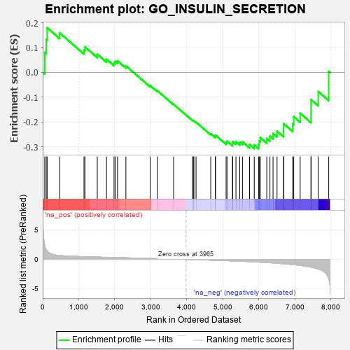
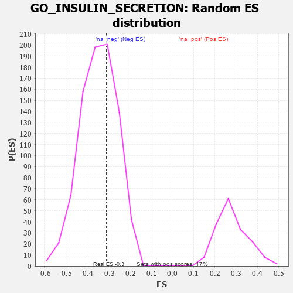

| | | Dataset | 7d |
| Phenotype | NoPhenotypeAvailable |
| Upregulated in class | na_neg |
| GeneSet | GO_INSULIN_SECRETION |
| Enrichment Score (ES) | -0.30751684 |
| Normalized Enrichment Score (NES) | -0.8885978 |
| Nominal p-value | 0.65458935 |
| FDR q-value | 0.95873064 |
| FWER p-Value | 1.0 |
Table: GSEA Results Summary

Fig 1: Enrichment plot: GO_INSULIN_SECRETION
Profile of the Running ES Score & Positions of GeneSet Members on the Rank Ordered List
| PROBE | GENE SYMBOL | GENE_TITLE | RANK IN GENE LIST | RANK METRIC SCORE | RUNNING ES | CORE ENRICHMENT | | 1 | MC4R | | | 57 | 2.491 | 0.0802 | No |
| 2 | IRS1 | | | 98 | 1.659 | 0.1334 | No |
| 3 | ADCY8 | | | 124 | 1.418 | 0.1799 | No |
| 4 | LRP1 | | | 470 | 0.648 | 0.1591 | No |
| 5 | SNX19 | | | 1146 | 0.454 | 0.0899 | No |
| 6 | RFX3 | | | 1171 | 0.451 | 0.1027 | No |
| 7 | INHBB | | | 1514 | 0.388 | 0.0732 | No |
| 8 | LRP5 | | | 1769 | 0.342 | 0.0531 | No |
| 9 | BRSK2 | | | 1979 | 0.308 | 0.0375 | No |
| 10 | RAF1 | | | 2011 | 0.303 | 0.0443 | No |
| 11 | KCNC2 | | | 2075 | 0.295 | 0.0467 | No |
| 12 | REST | | | 2308 | 0.259 | 0.0265 | No |
| 13 | ANO1 | | | 2982 | 0.152 | -0.0531 | No |
| 14 | PSMD9 | | | 3179 | 0.125 | -0.0735 | No |
| 15 | ACSL4 | | | 3632 | 0.055 | -0.1286 | No |
| 16 | HNF4A | | | 4157 | -0.034 | -0.1935 | No |
| 17 | PDX1 | | | 4179 | -0.038 | -0.1948 | No |
| 18 | ENY2 | | | 4195 | -0.041 | -0.1953 | No |
| 19 | ARL2 | | | 4254 | -0.050 | -0.2008 | No |
| 20 | ITPR1 | | | 4661 | -0.130 | -0.2475 | No |
| 21 | MYO5A | | | 4787 | -0.155 | -0.2578 | No |
| 22 | PCLO | | | 4793 | -0.156 | -0.2530 | No |
| 23 | DRD2 | | | 5088 | -0.221 | -0.2823 | No |
| 24 | DOC2B | | | 5113 | -0.229 | -0.2773 | No |
| 25 | PICK1 | | | 5265 | -0.263 | -0.2871 | No |
| 26 | RIMS2 | | | 5272 | -0.265 | -0.2786 | No |
| 27 | ITPR3 | | | 5361 | -0.288 | -0.2796 | No |
| 28 | CPT1A | | | 5467 | -0.311 | -0.2819 | No |
| 29 | SIDT2 | | | 5542 | -0.331 | -0.2796 | No |
| 30 | ENSA | | | 5739 | -0.388 | -0.2908 | No |
| 31 | CDK16 | | | 5869 | -0.425 | -0.2921 | Yes |
| 32 | SYT9 | | | 5992 | -0.469 | -0.2911 | Yes |
| 33 | PTPRN | | | 6007 | -0.474 | -0.2762 | Yes |
| 34 | RAC1 | | | 6036 | -0.484 | -0.2628 | Yes |
| 35 | SMAD2 | | | 6216 | -0.541 | -0.2664 | Yes |
| 36 | SYTL4 | | | 6304 | -0.578 | -0.2571 | Yes |
| 37 | TRPM4 | | | 6390 | -0.612 | -0.2463 | Yes |
| 38 | DPP4 | | | 6501 | -0.663 | -0.2369 | Yes |
| 39 | MPC2 | | | 6683 | -0.753 | -0.2334 | Yes |
| 40 | CPLX1 | | | 6684 | -0.753 | -0.2069 | Yes |
| 41 | GHSR | | | 6937 | -0.894 | -0.2074 | Yes |
| 42 | PIM3 | | | 6964 | -0.914 | -0.1786 | Yes |
| 43 | CFTR | | | 7143 | -1.030 | -0.1649 | Yes |
| 44 | MYRIP | | | 7443 | -1.323 | -0.1562 | Yes |
| 45 | KCNB1 | | | 7444 | -1.327 | -0.1097 | Yes |
| 46 | MCU | | | 7644 | -1.637 | -0.0774 | Yes |
| 47 | ARRB1 | | | 7935 | -3.377 | 0.0045 | Yes |
Table: GSEA details [plain text format]

Fig 2: GO_INSULIN_SECRETION: Random ES distribution
Gene set null distribution of ES for GO_INSULIN_SECRETION